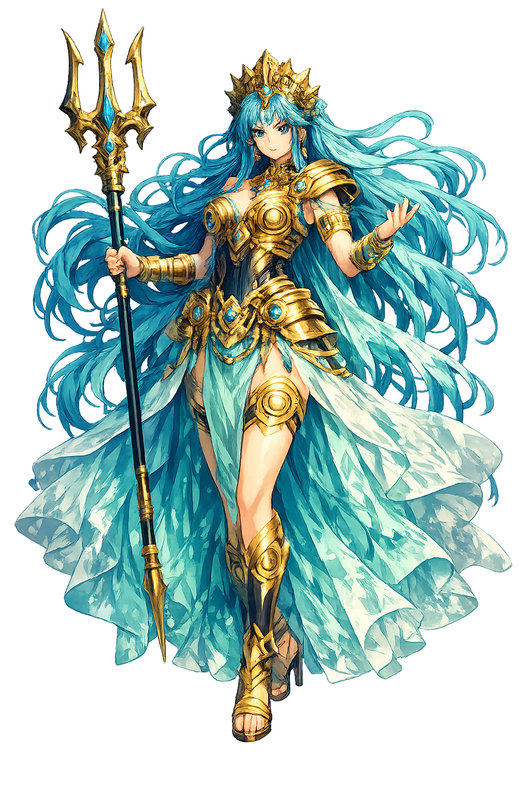

The Authentic Orthography
Lost Island, Legendary Realm, Sea · Daughter of Atlas; the legendary lost island civilization

Unicode restoration and ASCII comparison
Ἀτλαντίς
The name in its original Greek form. Atlantís (Ἀτλαντίς) is attested in the source tradition — “Daughter of Atlas; the legendary lost island civilization”. Its acute accents carry the full phonetic and orthographic weight of the source tradition.
atlantis
Reduced to plain atlantis, the name loses everything that made it specific: acute accents. What remains is an ASCII string that machines can parse but that no longer speaks with its original voice.
Atlantís
The Unicode restoration recovers what ASCII flattened. Atlantís restores acute accents, returning the name to its original written dignity. The domain encodes to Punycode, but the browser displays the truth.
Atlantís.com → xn--atlants-dza.com
The non-ASCII characters in Atlantís are encoded while the ASCII remains visible. To the DNS, it is Punycode. To humanity, it is Atlantís.
How Atlantís is preserved in writing
A bespoke provenance study for Atlantís is being prepared by the PUNICODEX scholarly team.
Contribute scholarly provenance →How Atlantís was spoken
Legendary Civilization, Hubris, Cataclysm
Atlantís is the legendary island civilization described by Plato, a powerful naval empire that angered the gods and sank beneath the waves in a single day and night. It is the archetype of the golden age destroyed by its own ambition.
A ringed island beyond the Pillars of Herakles, rich in metals, timber, and fertile soil.
Its fleet dominated the Mediterranean until Athens led a resistance of free Greeks.
Its kings grew greedy and impious; Zeus punished them with earthquakes and floods.
Sank beneath the Atlantic, becoming the template for every lost-civilization legend.
Stories of Atlantís
Atlantís is Plato's story, whether invented or adapted from older traditions. It serves as a philosophical allegory about the corruption of power and the fragility of civilization.
Solon visits Egypt and hears from a priest that Athens once defeated a great Atlantic power nine thousand years earlier. The Greeks have forgotten because catastrophes repeatedly destroy their records, while Egypt's memory is preserved by the Nile's stability.
Atlantis was allotted to Poseidon, who fell in love with a mortal woman, Kleito. Their descendants built a magnificent capital of concentric harbors, temples, and walls. For generations they were virtuous; then wealth and power corrupted them.
Zeus assembled the gods to punish Atlantis. 'There were earthquakes and floods of extraordinary violence, and in a single dreadful day and night all your fighting men were swallowed up by the earth, and the island of Atlantis was similarly swallowed up by the sea and vanished.' Only mud shoals remained.
Atlantis is the myth that we want to be true. It promises that somewhere, once, people knew more than we do — and that their knowledge sleeps beneath the waves, waiting to be recovered. That desire says less about history than about our own dissatisfaction with the present.
Enter Extended Lore